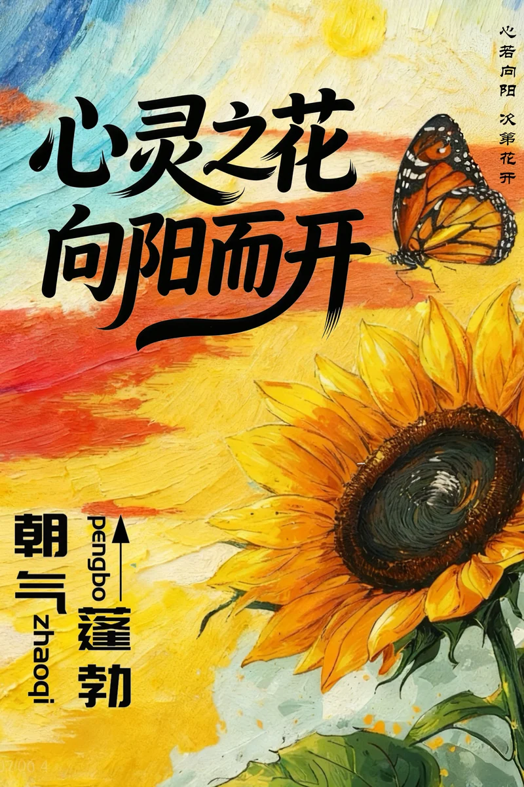
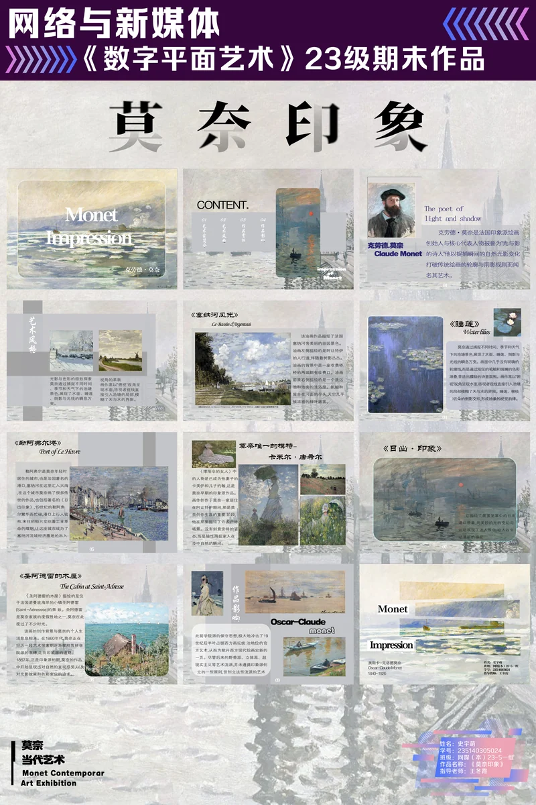
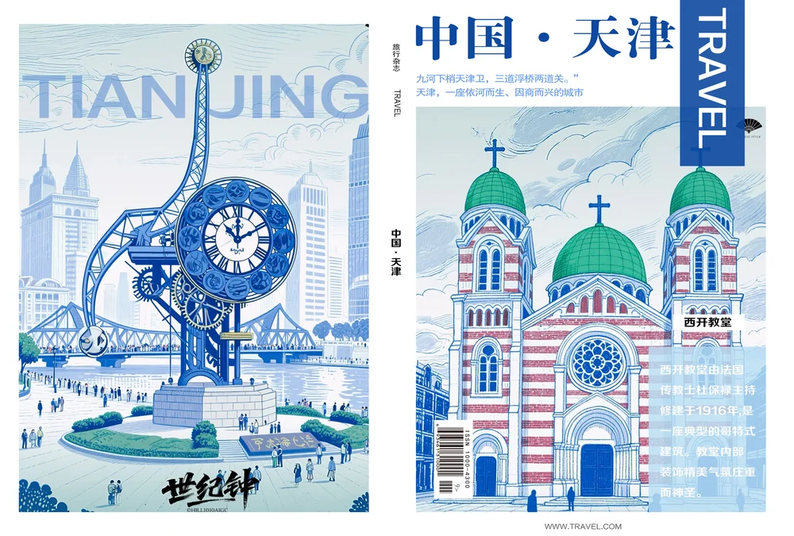
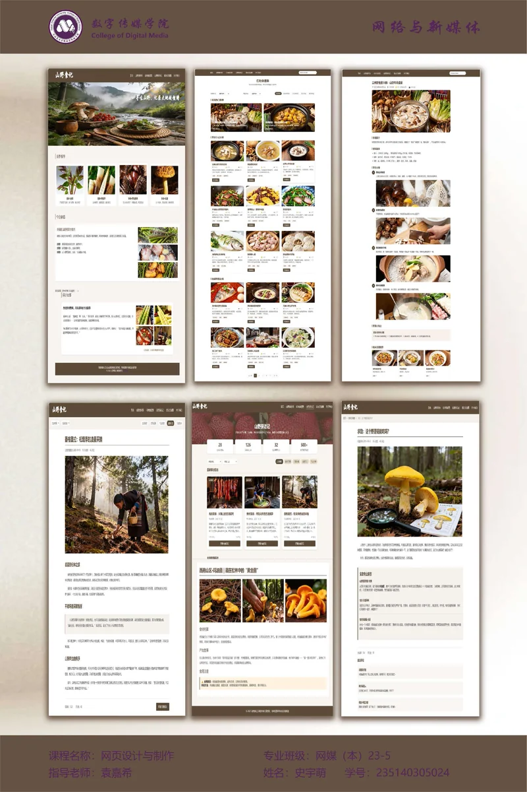
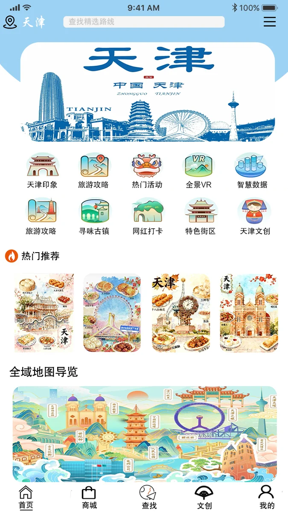

01 / VIDEO EDIT
动漫混剪 / 视觉包装00:21
轻音少女创意混剪
人物分层、分屏拼贴与文字动效，让熟悉的角色在新的构图中相遇。
视频暂时无法播放，点此直接打开。
从剪辑节奏到视觉设计，记录每一次创意表达。
6 段视频 · 7 张图片，点击播放或放大浏览。
人物分层、分屏拼贴与文字动效，让熟悉的角色在新的构图中相遇。
视频暂时无法播放，点此直接打开。
以角色互动串联片段，结合画中画、多画面组合和字幕编排，呈现不同情绪。
视频暂时无法播放，点此直接打开。
用蒙版分割、画面叠加与节奏切换，重新组合影片中的人物和场景。
视频暂时无法播放，点此直接打开。
围绕角色与动作片段，结合人物剪影、文字编排和高对比色彩完成视觉切换。
视频暂时无法播放，点此直接打开。
另一组角色片段的重新编排，以多画面组合与字幕衔接组织观看节奏。
视频暂时无法播放，点此直接打开。
结合人物口播、重点字幕与辅助画面，呈现适合手机观看的竖屏内容。
视频暂时无法播放，点此直接打开。
海报、版式与页面原型。点击图片放大，支持切换与查看高清图。

点击放大 ↗海报设计
以向日葵与蝴蝶构成画面，传达“心灵之花，向阳而开”的主题。

点击放大 ↗平面与版式设计
围绕莫奈与印象派主题，展示系列页面的色彩、图片与文字编排。

点击放大 ↗旅游杂志封面
结合城市地标与插画元素，呈现旅游杂志的封面和封底设计。

点击放大 ↗网页设计
围绕美食内容，展示首页、列表页与内容页等页面设计。

点击放大 ↗小程序页面设计
以城市文旅为主题，组织分类入口、推荐内容与地图导览。
App 原型设计 · 2 张
展示启动、登录、内容浏览与交流等页面；点击任意一张可放大查看。
感谢观看，
期待下一次创作。